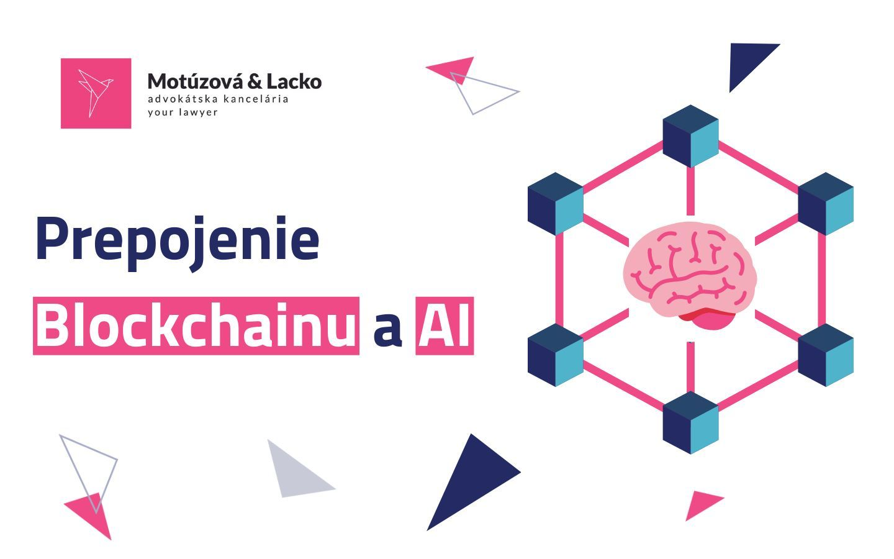

Existuje funkčné prepojenie blockchain a AI?
Blockchain je distribuovanou digitálnou „účtovnou knihou“ (distributed ledger), ktorá umožňuje takmer okamžité transparentné zapisovanie šifrovaných informácií používateľmi. Jeho hlavnou výhodou je decentralizácia, to znamená, že existujú vopred stanovené matematické pravidlá, na základe ktorých dochádza k zapisovaniu údajov do blockchainu, ktoré však jednotlivci a ani skupiny nemôžu dodatočne zmeniť.
Artificial Intelligence „AI“ (umelá inteligencia) na druhej strane využíva výpočtovú silu počítačov a dáta na napodobnenie ľudského uvažovania. Samozrejme, využitie AI je oveľa širšie a zahŕňa aj množstvo podoblastí ako machine learning či tzv. deep learning, ktoré slúžia primárne na predpovedanie a následné riešenie potenciálnych scenárov alebo situácií, a to či už ide o znižovanie energetickej spotreby systémov až po identifikovanie kybernetických hrozieb.
Prepojenie týchto technológií vytvára skvelú symbiózu!
V Motúzová & Lacko law firm sme sa pozreli na konkrétne výhody tohto prepojenia.
AI by mohla blockchainu poskytnúť možnosť automatizovaného spracovania údajov a „vlastného“ inteligentného rozhodovania a to nasledovne:
1. Zvýšiť zabezpečenie ako aj škálovateľnosť blockchainu. Množstvo doteraz získaných dát o predošlých transakciách umožňuje zlepšiť škálovateľnosť blockchainu na základe reálnych situácií. AI môže na základe získaných dát taktiež ľahko predpovedať, či je používaná blockchain sieť bezpečná alebo nie.
2. Optimalizovať tzv. „smart contracts“. Obvykle sú smart contracts dizajnované a implementované používateľmi. Integráciou AI by pri týchto procesoch bolo možné obmedziť ľudské chyby pri ich dizajnovaní.
3. Optimalizovať spotrebu energie potrebnej na fungovanie blockchainu. Energetické zdroje nevyhnutné pre fungovanie blockchainu možno na základe predchádzajúcich dát racionálne predpovedať a následne ich prerozdeľovať metódou machine learning-u a automatickej optimalizácie prostredníctvom AI.
Dopĺňa blockchain AI?
Blockchain zároveň dopĺňa AI a mohol by byť využitý nasledovne:
1. Blockchain by mohol pomôcť kontrolovať a lepšie zabezpečiť prenášané údaje medzi používateľmi. Zároveň poskytuje transparentnú a bezpečnú možnosť monitorovania dát.
2. Blockchain by mohol optimalizovať distribuovaný výpočtový výkon počítačov a sietí, a to tak, že by umožnil používateľom zdieľať výpočtové zdroje nečinných hardvérových zariadení.
3. Prostredníctvom blockchainu by mohlo byť možné zamedziť, aby sa dáta, na základe ktorých sa AI zdokonaľuje, opakovali a zbytočne tak zaťažovali systém.
